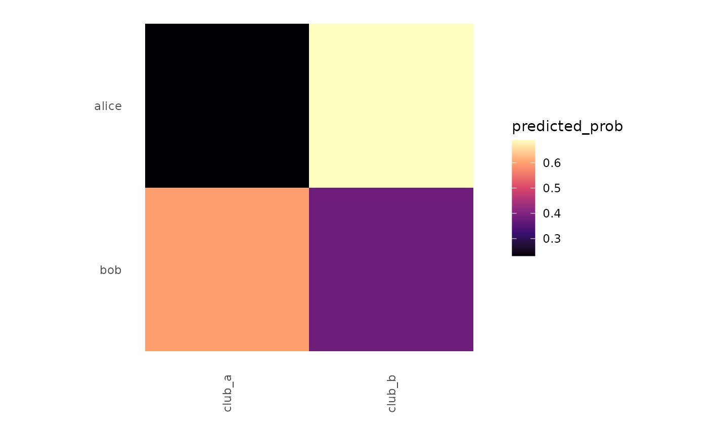

takes the posterior-mean (or point-estimate) prediction matrix
from a lame::ame() / lame::ame_als() / amen::ame() fit and
wraps it as a netify so the predictions can be summarized, plotted,
or compared to the observed netlet via compare_networks().
Usage
from_lame_fit(
fit,
value = c("fitted", "residual", "prob", "prob_lower", "prob_upper", "fitted_lower",
"fitted_upper"),
symmetric = NULL,
alpha = 0.05
)Arguments
- fit
a fitted object from
lame::ame(),lame::ame_als(),lame::lame(), oramen::ame(). must expose a fitted-value matrix (e.g.,fit$ez,fit$zpostmean, orfitted(fit)). forvaluein"prob_lower"/"prob_upper"/"fitted_lower"/"fitted_upper"the fit must additionally expose a per-draw array of fitted values. the slots searched, in order, are:fit$boot$ezandfit$boot$y_hat(lame als parametric / block bootstrap), thenfit$ez_draws,fit$ezps, andfit$z_draws(gibbs posterior draws), with shape[n, n, b]or[n, n, t, b].- value
one of
"fitted"(default – posterior-mean linear predictorez/zpostmean),"residual"(observed - fitted),"prob"(logistic / probit -> probability scale, when the family supports it), or"prob_lower"/"prob_upper"/"fitted_lower"/"fitted_upper"(per-cellalpha/1-alphaquantiles across bootstrap or posterior draws). whenlameexposes afitted()method for the object, that's preferred. forvalue = "prob"with a binary family, link detection follows this priority: (1) any explicitlinkslot on the fit (orfit$control$link); (2) als class (any token containing "als") orfit$fit_method = "als"-> probit, matchinglame::ame_als(); (3)lameclass -> logit, matchinglame::lame()gibbs default; (4)ame/amenclass (and nofit_method = "logit"override) -> probit, matchingamen::ame()gibbs convention; (5) otherwise logit fallback.- symmetric
logical. override the inferred symmetry; default reads from the fit's stored
mode/y.- alpha
numeric in (0, 0.5). tail probability for the
*_lower/*_upperquantiles. default0.05-> 90% interval (lower = 0.025, upper = 0.975 when interpreted as a two-sided ci; here we use lower = alpha/2, upper = 1 - alpha/2).
Value
a cross-sectional netify object whose underlying matrix is the fitted-value (or residual) matrix at the same actor ordering.
Details
useful for posterior-predictive checks: build the observed netlet,
run an ame fit, then from_lame_fit(fit) |> plot(style = "heatmap")
to visualize the fitted intensity matrix.
Examples
# \donttest{
fitted_values <- matrix(
c(-1.2, 0.4, 0.8, -0.5),
nrow = 2,
dimnames = list(c("alice", "bob"), c("club_a", "club_b"))
)
fit <- list(
EZ = fitted_values,
family = "binary",
link = "logit",
mode = "bipartite"
)
pred_net <- from_lame_fit(fit, value = "prob")
plot(pred_net, style = "heatmap")

# }